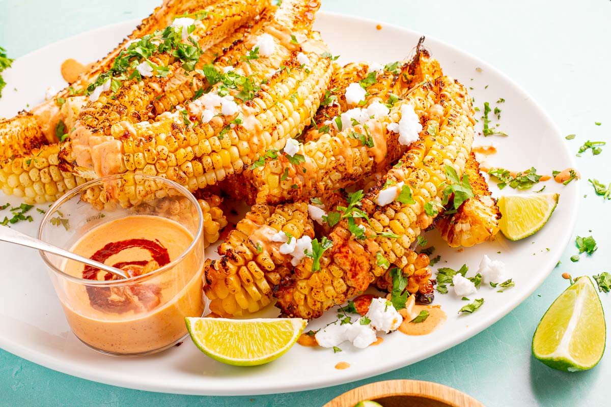

Corn Ribs

What are Corn Ribs?
Long strips of corn are coated in herbed butter and then air fried to perfection. These corn ribs went viral on TikTok, and are one delicious dish that can be served as a side dish or vegetarian appetizer
Ingredients:
- 3 Corn on a Cob: husks removed
- 1/2 cup of Butter
- 3-4 tablespoons Chopped Cilantro
- Sea Salt: for serving
Steps To Make Corn Ribs:
- Stand the corn vertically on a cutting board. Place the knife firmly at the top of the corn right in the middle and push the knife downwards carefully. The shorter and wider the corn the better!
- Hold the two halves together and cut them in half again vertically to create quarters.
- Combine the butter and cilantro to create the herbed butter. Brush the herbed butter all over the 12 pieces of corn ribs
- Air fry at 400°F for 10-15 minutes
- Remove from the air fryer and sprinkle with sea salt!
Enjoy!
Back To Homepage